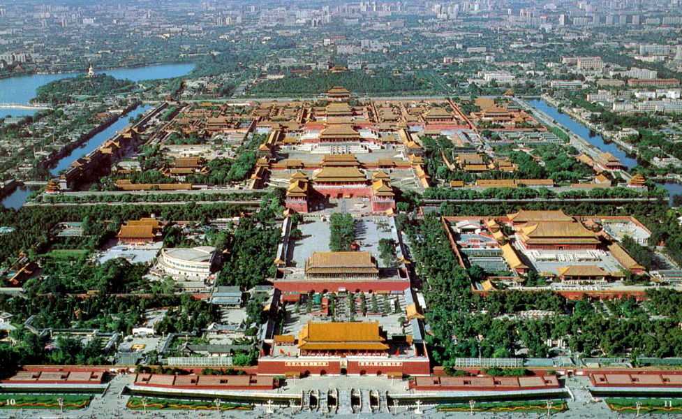

Tours Information
Peking University
Peking university (PKU) itself is a popular travel spot in Beijing. You can take a walk around the campus during the workshop.
Most spots are in the northern part of the campus. Here is the map of the campus, which can be zoomed in and out.

Weiming ("Unnamed") Lake and Boya Pagoda are landmarks of PKU. The tomb of Edgar Snow, author of Red Star Over China, can be found on the south bank of the lake.
The campus is also filled with delicate antique structures, which can be traced to Qing Dynasty. For now some of these ancient buildings
are used as office locations, such as the South & North Pavilions.
Please visit heritages of PKU for more information.
Founded in 1898, PKU has been closely associated with the Chinese history and witnessed the reformation and revolution of China during the last century.
If you are interested in learning more about the history of Peking University, please visit the Museum of Peking University History.
Around PKU
There are also some popular travel spots near PKU, such as Yuanmingyuan (Old Summer Palace) and Yiheyuan (Summer Palace).
The Old Summer Palace, Yuanmingyuan (in Chinese means the Gardens of Perfect Brightness), was "the garden of all gardens".
It was a complex of palaces and gardens in Beijing and ruined in the Second Opium War.
Yuanmingyuan is just to the north of Peking University. The distance is about 1 km from east gate of Peking University.
You can walk there or take subway line 4 and get off at "Yuanmingyuan" station for only 1 station.
Workshop tour
In the last day of the workshop, we shall take a tour to the Summer Palace or the Forbidden City.
The Summer Palace is a vast ensemble of lakes, gardens and palaces and as declared by UNESCO, "a masterpiece of Chinese landscape garden design".
The Forbidden City was the Chinese imperial palace from the Ming Dynasty to the end of the Qing Dynasty, for almost 500 years, and is the Palace Museum at present.
It was the home of emperors and their households as well as the ceremonial and political center of China.

If you want to go to the Summer Palace or the Forbidden City by yourself, taking subway is a nice option.
The maps of related routines are provided in this page.
Restaurants
There are many restaurants around Peking University, including Chinese style, Western style, vegetarian food and other international styles.
For convenience, you can have your lunch around Zhongguanyuan to save time, some recommended restaurants are listed in the map of lunch spots.
For example two restaurants around Zhongguanyuan Global Village, PKU are close to the avenue: the Heyuan restaurant and the 1898 cafe.
There are also many restaurants suitable for dinner in three subdistricts around subway stations (Wudaokou, Zhongguancun and Renmin University), for details please take a look at the map of dinner spots.
{kind=link}
{kind=link}
Besides, Tsinghua Restaurants, the food map provided by the ICQC main conference is also available for participants of this workshop since Tsinghua University (THU) is close to PKU.
We also recommend two famous Peking roast duck restaurants with traditional features, Quanjude(全聚德) near Wenjin hotel and Xihe(羲和雅苑) in the south of PKU.
For those who want to experience the royal style of Qing Dynasty, the bai family mansion (白家大院) to the southwest of PKU and Tingliguan (听鹂馆) in the Summer Palace are nice options.
Souvenir Shopping
If you want to go shopping for souvenirs, you will find what you want in areas like Panjiayuan Flea Market, Beijing Antique City, Liulichang Ancient Cultural Street, Qianmen Street, Gulou Street, and so on. Don't forget to bargain with the vendors.

Please visit http://www.chinahighlights.com/beijing/shopping.htm and http://www.tour-beijing.com/blog/beijing-travel/top-10-beijing-markets/ for more information.
Beijng City
Please see http://www.icqc2015.org/ for 'Tours Information', which is also listed below.
Beijing, with a history of 3000 years, is the political, economic, academic, and cultural center of China.
As one of the oldest capital cities, Beijing integrates not only the splendid ancient culture, but also the modern civilization.
The long history of Beijing endows the city with a rich cultural heritage.
The Great Wall, one of the greatest wonders in the world, extends thousands of miles
from eastern Shanhaiguan to western Jiayuguan, and passes through Beijing.
The poetic and picturesque Summer Palace represents the highest architectural level of royal garden of China.
The Forbidden City has the most splendid group of imperial palaces in the world.
The temple of heaven is the place of worship for emperors of Ming and Qing dynasties of China,
as well as a splendid representation of ancient Chinese architectural art.
These four sites have been approved by the United Nations Educational, Scientific and Cultural Organization as the world cultural heritage.
Besides, Hutong (Chinese alleys) and compound courtyards (old Beijing residential quarters) are an indispensable part of Beijng culture.
These streets and buildings have witnessed the ups and downs of the city in the past centuries, and become a symbolic life in Beijing.
Beijing changes day-by-day. As summarized in a popular saying, Beijing is growing taller and younger
with much more skyscrapers, higher living standards and diversified life styles.
This is Beijing, old and young, full of attractions. It is our sincere wish that you will enjoy a good and amazing time here.
For more information about Beijing, please visit http://www.beijingpage.com.
Check this site if you want to travel by yourself.
If you dislike the modern and commercial malls such as in Xidan and Wangfujing, streets around Guozijian, Gulou Dajie and Nanluoguxiang
with more human feel are nice options. You can rend a bicycle there and take a ride in the Hutongs to feel the elder Beijing.
Climate
Beijing lies in the continental monsoon region in the warm temperature zone.
The four seasons in Beijing are distinctive. Its climate represents as hot and rainy
in summer and cold and dry in winter. August and September, the end of summer and the
beginning of autumn in Beijing, have the most comfortable weather in the year
when the sky is blue, and the air is crisp, mild and humid.
For more information, please visit
http://www.travelchinaguide.com/climate/beijing.htm.
Currency and Exchange
The official currency in China is the Renminbi (RMB) or "people's currency".
The basic unit is the "yuan" (also known as "kuai"), equaling to 10 "jiao" (or "mao")
which is then divided into 10 "fen". Exchange centers can be found at airports, most hotels
and large shopping centers. Automatic Teller Machine (ATM) could help you draw the RMB cash
from your Visa, Mastercard, American Express, Diners Club, JCB, and other credit cards,
which are also accepted in most malls and hotels. Please keep your currency exchange
receipt by which you can change the remaining RMB cash back to foreign currency when leaving China.
Bank of China and most hotels can cash traveler's checks issued by any foreign bank or financial institution.
Participants will need to show their passport and pay 0.75% commission fee.
Traveler's checks signed over to a third party cannot be cashed in China,
but can be presented for collection through the Bank of China.
Convertible currencies will be Australian dollar (A$), Austrian schilling (Sch),
Belgium franc (BF),Canadian dollar(Can$), Danish krone (Dkr), German mark (DM),
French franc (Ff), Japanese yen (Y), British sterling pound, US dollar US$), Hong Kong dollar (HK$) etc.
For more information, please visit http://www.travelchinaguide.com/essential/money-matter.htm.
You can check the currency up to date here.
Tips
Safety
China is generally a safe country. However, hang on tight to your wallet especially in crowded, popular tourist
sites in tourist cities such as Beijing and Xi'an. These tourist cities also have a lot of touts in the streets
touting from currency exchange to jewellery. Stay away from them!
Water
In China, tap water is considered quite hard and needs to be boiled before drinking.
Therefore, tap water at all hotels in China is not drinkable directly.
Inquire with hotel staff members when you check in.
If you are unsure it is recommended you drink bottled water only or cool boiled water offered by hotels.
Please visit http://www.china.org.cn/english/travel/45789.htm and related pages for more information.
Power Supply
China uses 220 volt power supply for standard domestic and business purposes.
Hotels generally provide wall sockets in every bathroom for razors and hair dryers,
accommodating both "straight two-pin plugs," and "triangular 3-pins plugs."
Please visit http://www.china.org.cn/english/travel/45790.htm and related pages for more information.